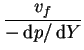
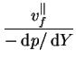
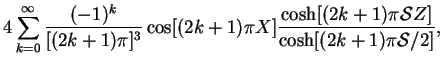
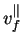

The equation (7.19) for is simply that for fully developed
laminar flow in a duct of rectangular section, the solution for
which is well known
(Dryden, Murnaghan & Bateman 1956, p. 197):


(7.22)

where
 is the solution valid for
(Lamb 1932, p. 582):